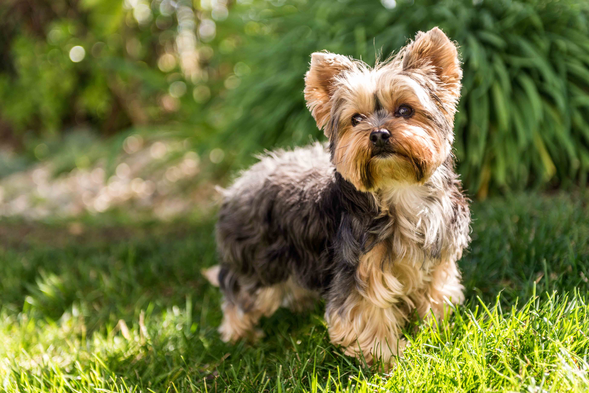

Single Coated Dogs
A dog with a single coat lacks an undercoat. While describing the type of coat the terms "fur" and "hair" is used depending on the race of the dog. A double coat, like of a Newfoundland, is referred to as a fur coat, while a single coat, like of a Poodle, is referred to as a hair coat. That means they also don't blow an undercoat in the spring and fall, so they have less shedding. Some single coats may have hairs of different lengths and textures Single coats may be straight, smooth, silky, curly or wiry.
Examples of single coated dogs:
- Australian Silky Terrier
- Bedlington Terrier
- Bichon Frisé
- Maltese
- Poodle
- Skye Terrier
- Soft Coated Wheaten Terrier
- Yorkshire Terrier

